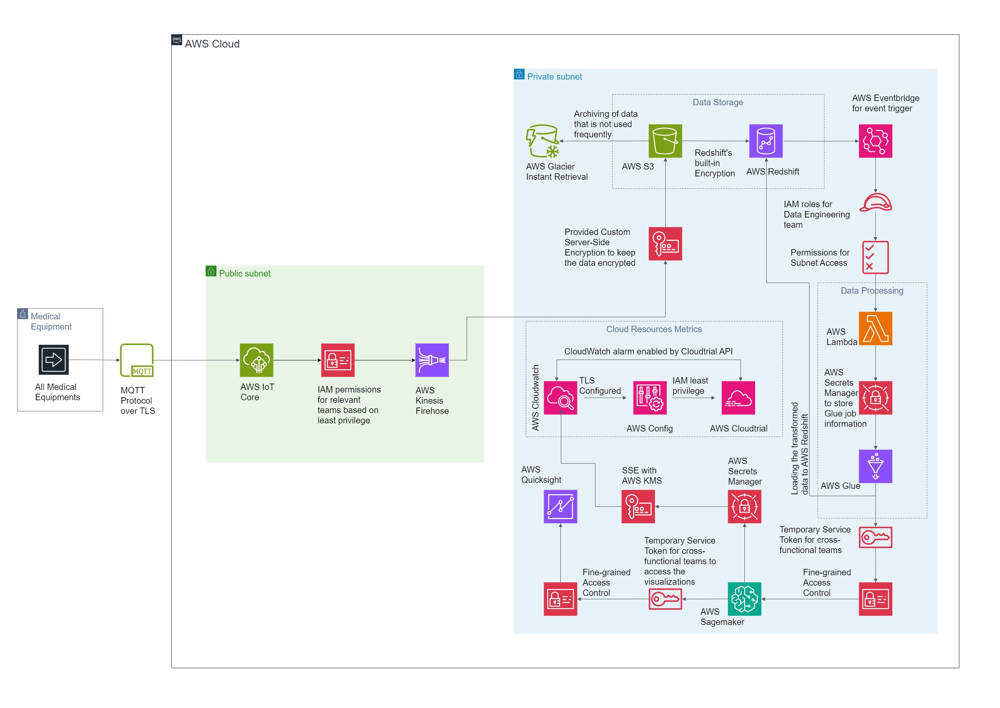

Devoir had an outstanding AWS architecture designed by their senior network architects, this architecture consisted of wide range of AWS services that were used to ensure that data from the medical devices from different locations were extracted, transformed and loaded in real-time.
Use the Download Button to download the file that shows the detailed architecture hosted on AWS.
DownloadThis specific architecture can predict the maintenance of the latest medical equipment system utilizing the vast suite of AWS services. An additional advantage is that this architecture functions as per HIPAA compliance to ensure the data transfer process is very secure.
Talking about the services we use AWS Kinesis Firehose for Data Ingestion, AWS S3 for storing the raw data, and AWS Redshift to store the structured data ensuring durability, availability, and reusability. With the help of AWS Lambda, we could process the data in real-time without servers and then we used AWS Glue for ETL operations.
AWS Sagemaker was implemented to develop predictive models that could forecast potential equipment failures. These models were trained on historical data and were continuously refined based on real-time data. Interactive Dashboards were built on AWS QuickSight to provide real-time insights to equipment health.
With the help of AWS KMS, the data was encrypted, the network was isolated using AWS VPC, and with the help of AWS IAM necessary access was provided based on the role and the team they belonged to considering least privilege factor.